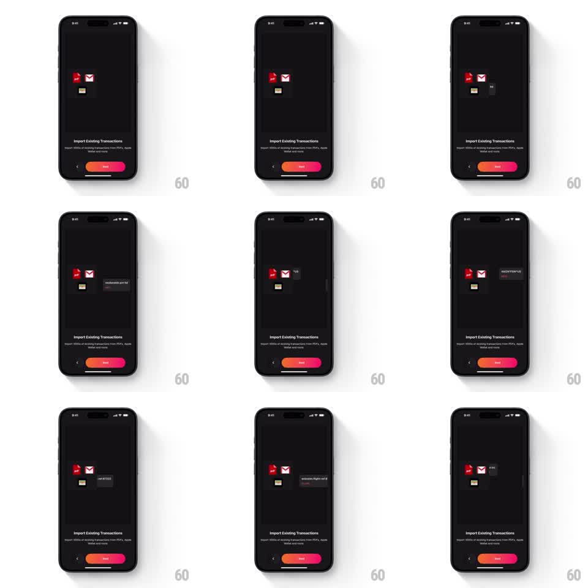

Media
Frame-by-frame

Rebuild this animation 1:1: Finma's import onboarding loop - on the dark "Import Existing Transactions" page, raw transaction labels slide out of the source icons (PDF, Mail, wallet) and drift across the stage, looping to suggest thousands of records pouring in.

Rebuild this animation 1:1: Finma's import onboarding loop - on the dark "Import Existing Transactions" page, raw transaction labels slide out of the source icons (PDF, Mail, wallet) and drift across the stage, looping to suggest thousands of records pouring in.
## Integration
Integration: stack-agnostic spec - springs given as stiffness/damping, timed motions as duration + curve; map every value to your framework and animation library of choice.
## Scene
Dark onboarding page: a cluster of source icons at center-left (red PDF, white Mail, wallet), and small dark label chips carrying raw merchant strings ("McDonald's Pvt ltd", "AMZN*64PU...", "uber*tr1233", "emirates flight-inl d", "9 INC") emerging and floating right. Below: "Import Existing Transactions" title, "Import 1000s of existing transactions from PDFs, Apple Wallet and more" subcopy, pager, back chevron, gradient Next pill.
## Motion spec
Pattern: looping emitter - labels spawn from icons and drift out.
- Each cycle: a label chip spawns behind its source icon (scale 0.5, opacity 0), slides out from the icon's edge (scale -> 1, translateX, 400ms, ease-out), then drifts right and slightly down (2s, ease-in) while fading (last 500ms).
- Sources alternate per spawn (PDF, Mail, wallet, 700ms apart); the icons bounce subtly when they emit (scale 1 -> 1.06 -> 1, spring ~340/16).
- Chips vary in vertical lane so streams do not collide; up to three chips are in flight at once.
- The loop runs continuously and seamlessly - the last chip's fade overlaps the next spawn.
## Calibration
- Chips are dark with gray text - raw, uncleaned data; no logos or categories at this step.
- The icon cluster stays fixed; only chips move.
## Reduced motion
Chips fade in/out at their end positions (300ms) without travel; icons static.
## Don't miss
- The merchant strings keep messy bank formatting - they are pre-categorization raw data.
- The Next pill's gradient and the pager are unchanged from sibling pages.